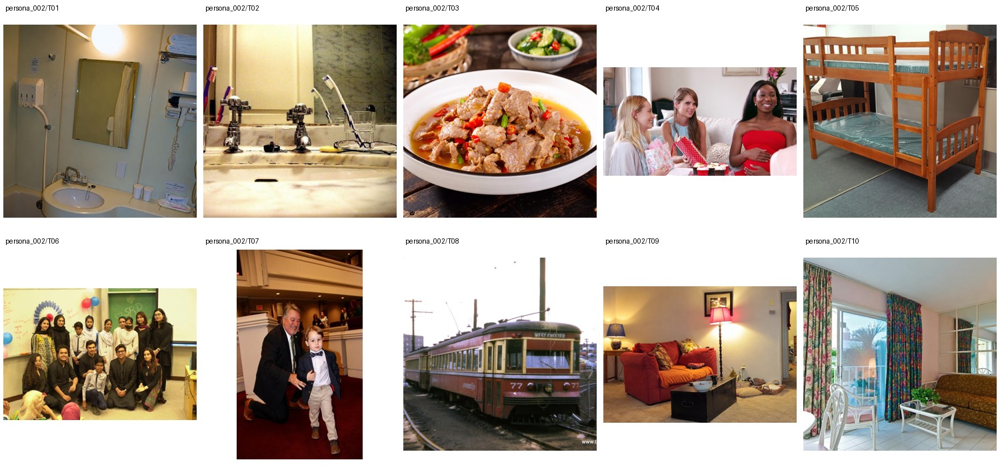

Azusa Bessho从事轨道工程公众沟通，已有家庭、周末出游和市政图纸收藏背景。任务围绕普通家居、餐食、聚会与轨道题材轻量匹配；具体颜色、图案、清理强度等在选图后补充。
Public engagement coordinator for a metropolitan rail construction program · Bachelor's degree in Construction Management · 未提供数值年龄；按职业与教育背景推定为成年人
Azusa spends her weekdays bouncing between noisy station-construction sites, neighborhood meetings, and hurried coffee chats with contractors who know she can calm down an angry room faster than anyone on the project team. At home, she is the mom sending funny parenting reels to her friends at midnight, experimenting with spicy low-carb dinners, and planning weekend outings with her husband and kids even when the laundry is still in a heap. She has a soft spot for romantic dramas and heartwarming stories about strangers being kind, but she is also unexpectedly obsessed with old municipal maps and keeps framed tunnel-boring machine diagrams in her hallway.
Add 1 · Attribute Modification 9 · Move 1 · Replace 1 · Remove 3 · Background 3 · Retouch 1 · Restyle 1
本轮每条2个独立原子操作，允许范围2–3，不按上限凑数；当前命令隐藏结果值与方向。新增动物仅为图中干扰候选，不登记为用户宠物。源图与命令均可查看前后对照，等待本轮人工审核；长期日常历史尚未生成。 所有实体和偏好仍为构建稿，尚无长期历史或编辑结果。
上层v3表达个性化编辑请求，底层列出操作、个性化参数及具体解析。125项global均不绑定题材或具体图片，由请求选择；人物基本信息、非global知识和图片保持不变。历史版本仅存internal；长期日常历史尚未构建。
整组图片与基础人物信息（已清理、统一字段）

{
"source": {
"dataset": "bowen-upenn/PersonaMem-v3",
"revision": "7b00a090b35b7293e6efeeb19494207f32b5a9ee",
"source_persona_id": "80",
"path": "backend/80/profile.json",
"raw_sha256": "94a543a598d7210a25f3fad860488d9e2e3253d3419b3e3029ccacb181fb4a97"
},
"basic_profile": {
"name": "Azusa Bessho",
"age": null,
"gender": "cisgender female, heterosexual",
"nationality": null,
"languages": [],
"location": {
"city": null,
"region": null,
"country": null,
"description": null
},
"education": {
"degrees": [
"Bachelor's degree in Construction Management"
],
"fields": [],
"institutions": []
},
"occupation": {
"title": "Public engagement coordinator for a metropolitan rail construction program",
"organization": null,
"industry": null,
"status": null
},
"relationship_status": null,
"summary": null,
"biography": "Azusa spends her weekdays bouncing between noisy station-construction sites, neighborhood meetings, and hurried coffee chats with contractors who know she can calm down an angry room faster than anyone on the project team. At home, she is the mom sending funny parenting reels to her friends at midnight, experimenting with spicy low-carb dinners, and planning weekend outings with her husband and kids even when the laundry is still in a heap. She has a soft spot for romantic dramas and heartwarming stories about strangers being kind, but she is also unexpectedly obsessed with old municipal maps and keeps framed tunnel-boring machine diagrams in her hallway.",
"hobbies": [],
"personality": {
"traits": [],
"values": [],
"quirks": [],
"big_five": {
"openness": "high",
"conscientiousness": "low",
"extraversion": "high",
"agreeableness": "high",
"neuroticism": "high"
}
},
"additional": {
"social_connections": [
{
"friend_id": "friend_1",
"display_name": "Zoe Baba",
"relationship_depth": "close",
"shared_interests": [
"mom friends",
"parenting reels",
"weekend outings"
]
},
{
"friend_id": "friend_2",
"display_name": "Zara Bando",
"relationship_depth": "close",
"shared_interests": [
"church",
"family updates",
"romantic dramas"
]
},
{
"friend_id": "friend_3",
"display_name": "Yuzuki Ban",
"relationship_depth": "close",
"shared_interests": [
"spicy low-carb dinners",
"school parents",
"fashion reels"
]
},
{
"friend_id": "friend_4",
"display_name": "Zoe Beaumont",
"relationship_depth": "acquaintance",
"shared_interests": [
"local civic updates",
"neighborhood meetings"
]
},
{
"friend_id": "friend_5",
"display_name": "Zenjiro Bito",
"relationship_depth": "acquaintance",
"shared_interests": [
"station construction updates",
"community meetings"
]
},
{
"friend_id": "friend_6",
"display_name": "Zinnia Barclay",
"relationship_depth": "acquaintance",
"shared_interests": [
"hair creators",
"dance reels",
"culture reels"
]
},
{
"friend_id": "friend_7",
"display_name": "Misaki Byun",
"relationship_depth": "acquaintance",
"shared_interests": [
"other parents",
"faith-friendly mutuals"
]
},
{
"friend_id": "friend_8",
"display_name": "Zenta Busujima",
"relationship_depth": "distant",
"shared_interests": [
"public mutuals",
"local civic observers"
]
},
{
"friend_id": "friend_9",
"display_name": "Nozomi Brackett",
"relationship_depth": "distant",
"shared_interests": [
"fashion reels",
"parent-adjacent followers"
]
},
{
"friend_id": "friend_10",
"display_name": "Zelie Beppu",
"relationship_depth": "distant",
"shared_interests": [
"church-adjacent friends",
"culture reels"
]
}
]
}
},
"adult_eligibility": {
"status": "adult",
"basis": "adult_career_and_education_context",
"inferred": true,
"numeric_age_provided": false
},
"persona_id": "persona_002"
}